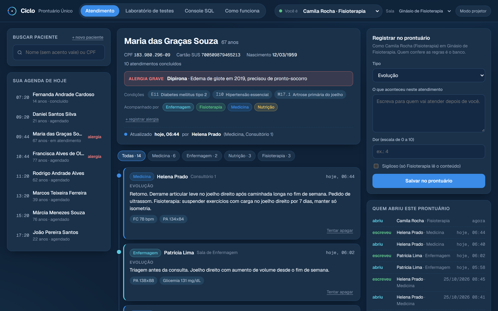
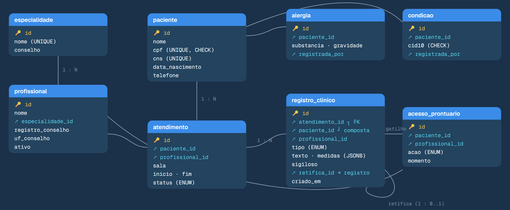
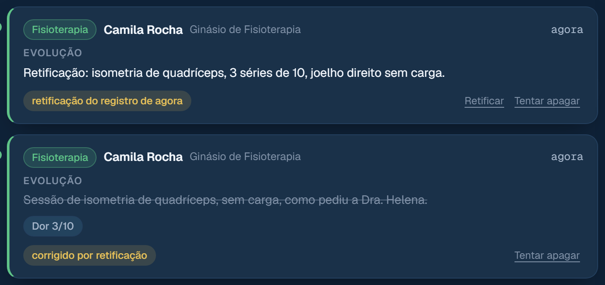
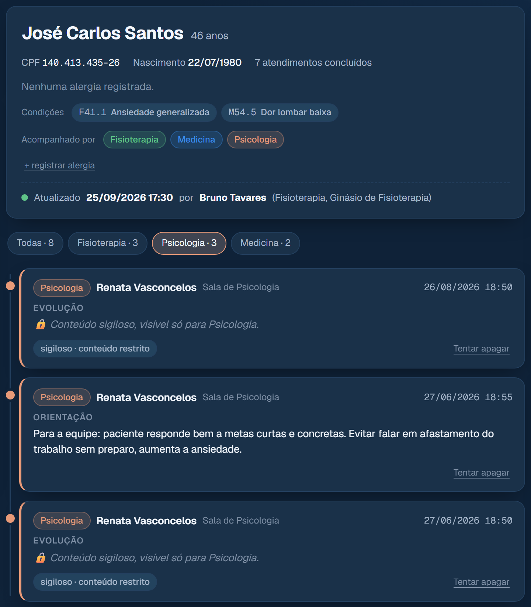
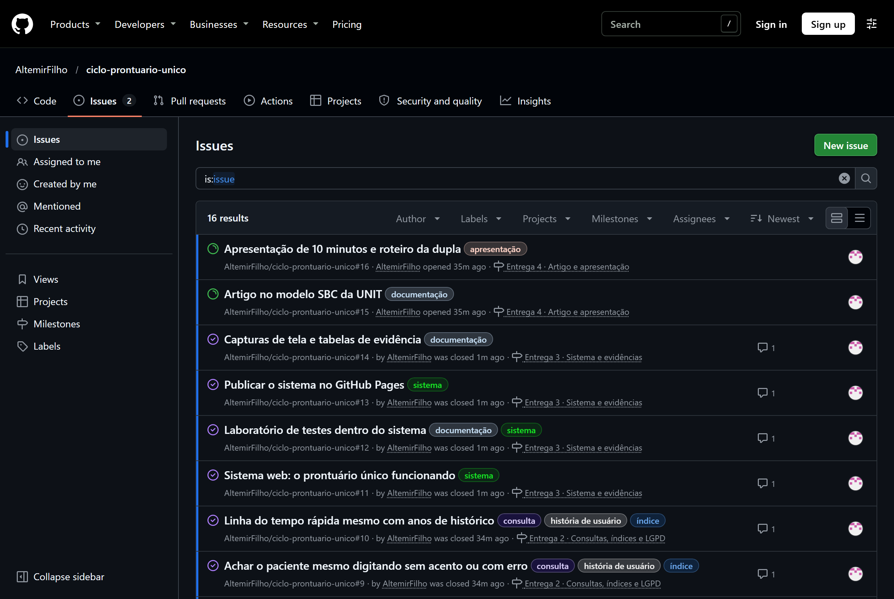

Trabalho de Banco de Dados · UNIT
Ciclo Prontuário Único · PostgreSQL, 38 testes executados e índices medidos
Altemir Cruz da Silva Filho · Juscelino Santos de Andrade
Prof. Sérgio Roberto Santos Santana · Aracaju, 24 de novembro de 2026
Derrame no joelho. "Fisioterapia: suspender carga por 7 dias."
A ficha do setor não tem a alergia nem a mudança de conduta.
Copia a dose antiga da metformina, que a médica já tinha corrigido.


Data impossível não entra no cadastro.
T01 · 30/02 recusado (22008)
Acaba com "evol.", "Evolução" e "EV" convivendo.
T02 · "evol." recusado (22P02)
CPF guardado só com os 11 dígitos, sem máscara.
T03 · 12 dígitos recusado (22001)
O que é de cada área (dor, peso, pressão) no mesmo registro, com regra.
T04 · T16 · dor 15 recusada
Guarda o instante, não o relógio da sala.
T05 · 13h UTC = 10h em Aracaju
Quem numera a ficha é o banco, sem colisão entre setores.
T06 · id manual recusado (428C9)
Segunda ficha da Dona Maria: recusada. Dígito trocado: recusado.
T07 23505 · T08 23514
Evolução do José na ficha da Maria: recusada.
T14 23503 · fk_registro_atendimento
Dor anotada como 15: recusada, com o nome da regra.
T16 23514 · ck_registro_dor
"dipirona" de novo: recusada. Desativada por engano: pode voltar.
T17 23505 · T18 aceito


Tempo do próprio PostgreSQL (EXPLAIN ANALYZE), mediana de 15 execuções, 180.239 registros. O custo também foi medido: o índice da linha do tempo ocupa 5,43 MB (a tabela, 28,89 MB).
Cada recusa veio com o código do PostgreSQL e o nome exato da regra. A mesma bateria roda no terminal e ao vivo dentro do sistema.

Perguntas? O console SQL do sistema responde na hora.
→ espaço clique avança · ← botão direito volta · F tela cheia · L laser · B tela preta · M este menu